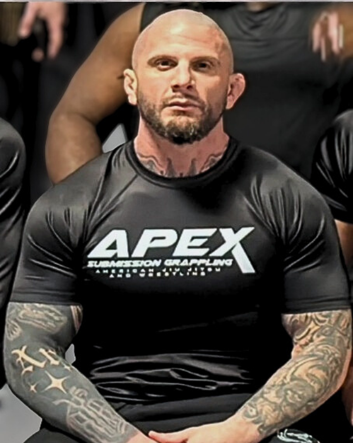
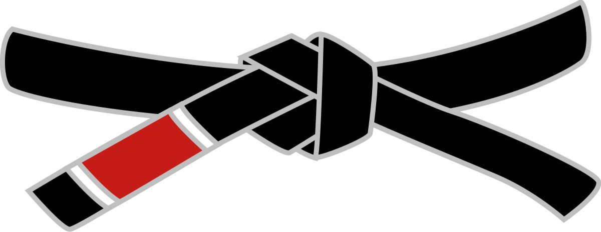
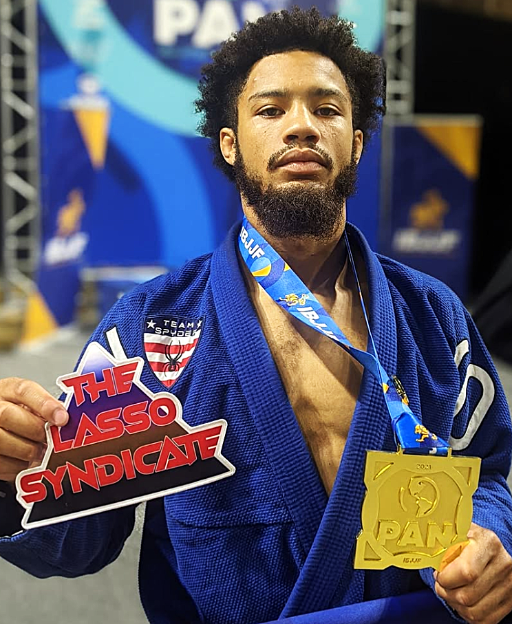
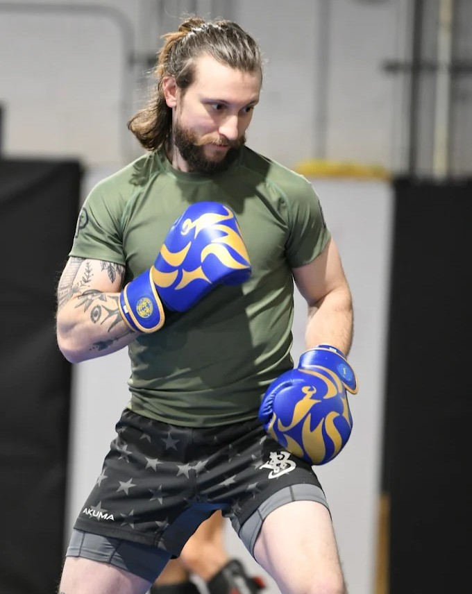
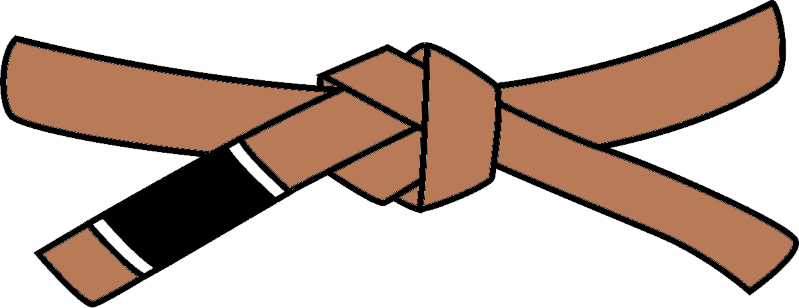
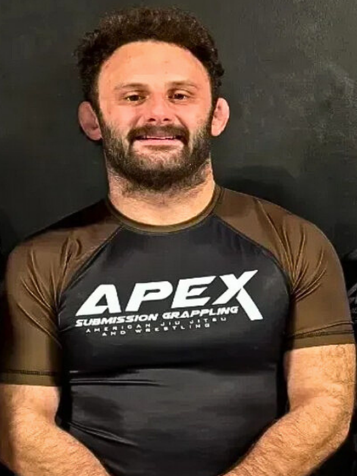
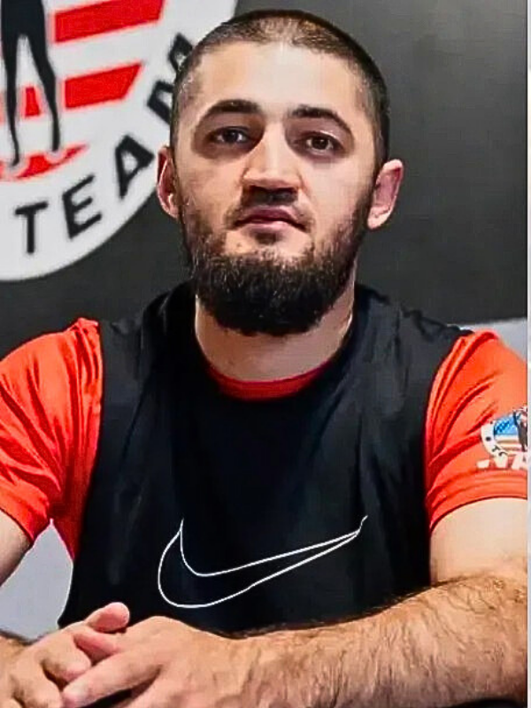
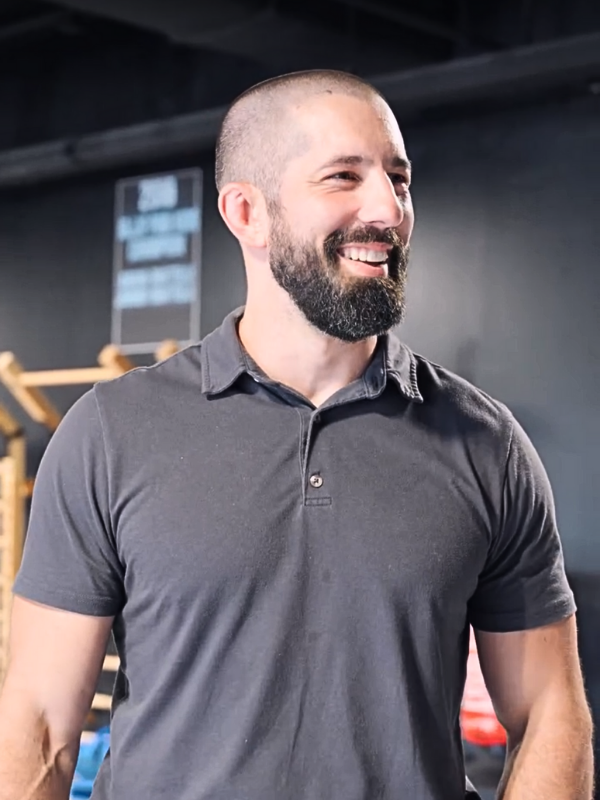

Coach John is an elite No-Gi Jiu-Jitsu specialist and the current #1 ranked athlete in the world under the International Brazilian Jiu-Jitsu Federation (IBJJF).


With more than 8 years of dedicated training in Jiu Jitsu and Kickboxing, and 3 years of training in Boxing, Coach Zander has developed a deep passion for the art of combat sports.

